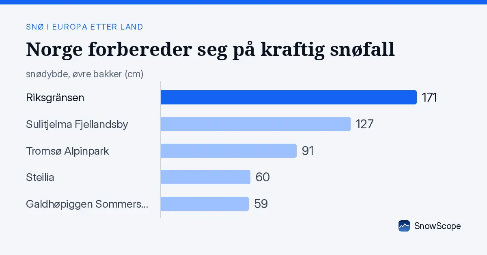
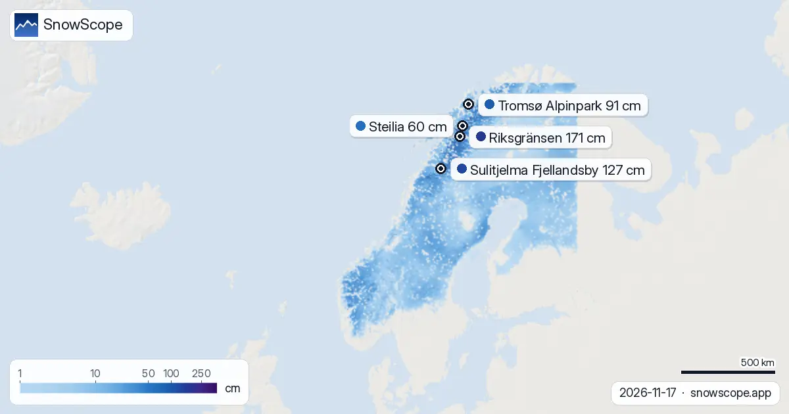

Norge forbereder seg på kraftig snøfall: 39 cm ventes i løpet av uken
Norge går inn i et betydelig snøfall. Prognoser viser opptil 39 cm frisk snø de neste dagene, med 20. november som toppdagen med 16 cm—en kraftig økning fra de beskjedne 4 cm som falt i løpet av de siste 24 timene.
Se snøprognosen for Riksgränsen direkte i SnowScope-appenSnødybde, puddervarsler og 3D-kartet, gratis.
Hva prognosen viser
20. november er flagget som den snøeste dagen, da omkring 16 cm ventes. Dette er et betydelig skifte fra det stille været nylig: bare 4 cm falt i løpet av den siste dagen, selv om totalen for tre dager fram til 17. november nådde 37 cm på deler av landet.
Timingen er viktig. Tidlig sesongsnø i disse mengdene bygger en base raskt i høyfjellene, men kan settles raskt i laverlandet. De to toppunktene—Hardangervidda med 56 cm på tre dager og Jotunheimen med 48 cm—viser hvor det tyngste nylige snøfallet har vært, og de ligger i banen for det inngående systemet.
| Skisted | Snødybde | Nysnø, 72 t | På vei, neste dager | Topp |
|---|---|---|---|---|
| Riksgränsen | 171 cm | 3 cm | 5 cm | 900 m |
| Sulitjelma Fjellandsby | 127 cm | 8 cm | 5 cm | 542 m |
| Tromsø Alpinpark | 91 cm | 10 cm | 3 cm | – |
| Steilia | 60 cm | 3 cm | 2 cm | – |
| Galdhøpiggen Sommerskisenter | 59 cm | 12 cm | 6 cm | 2 180 m |

Hvor snøen er dypest nå
Snødypene varierer kraftig etter høyde. Mellom 1 500–2 000 m er gjennomsnittet 28 cm og dekningen er total. Lavere ned blir bildet tynnere: 500–1 000 m gjennomsnittet er 18 cm med 96 prosent dekning, mens under 500 m er gjennomsnittet bare 7 cm med 80 prosent dekning.
Riksgränsen, dybdelederen, holder 171 cm i 900 m høyde—fordelen av langt nord latitude og orografisk forsterking. Sulitjelma Fjellandsby ligger på 127 cm. I andre enden holder Tromsø Alpinpark bare 91 cm, og både Steilia og Galdhøpiggen Sommerskisenter er godt under 60 cm. Gapet mellom høyfjells- og lavereliggende bakker er typisk for november.

Hvordan denne uken sammenligner seg med normalt
De fleste skisteder følger tett opp til eller litt under sitt normale gjennomsnitt for sein november. Riksgränsen ligger på 54 cm sammenlignet med sitt vanlige 59 cm for midten av november—omkring 92 prosent av normalt. Sulitjelma Fjellandsby ligger på 49 cm mot et typisk 52 cm, også nær 94 prosent av normalt. Begge er i anstendig form for sesongåpning.
Bekymringen ligger i de lavere fjellene. Tromsø Alpinpark ligger på bare 46 prosent av sitt normale 37 cm dybde, mens Steilia ligger på 54 prosent og Galdhøpiggen Sommerskisenter på 39 prosent av sitt typiske 82 cm. Det inngående snøfallet vil hjelpe til med å minske disse gapene, spesielt der høyden er stor, men tidlig sesongdekning forblir ujevn.
Snødekke over hele landet
Det er en økning på 4 740 km² på bare en dag og en gevinst på 67 960 km² over den siste uken—en rask utbredelse drevet av de nylige tunge snøfallene i høyfjellene. Snøgrensen ligger på 0 m, noe som betyr at snø når havet flere steder.
Hva du bør følge med på videre
De neste tre dagene vil se snø spre seg og dypne, med hovedtrykket som ankommer omkring 20. november. Etter det stabiliserer forholdene seg over den følgende uken. Høye høyder—spesielt over 1 500 m—vil få mest, mens dalfører og lavere bakker vil fylles inn mer gradvis. Tidlig sesongsnø er så tynn at steiner og tynne partier er vanlig under 1 000 m selv etter friske snøfall, så forsiktighet er lurt når du skal utenfor skistien.
Hvordan Norge sammenligner seg med naboene
Sverige ligger nå på 79 prosent hvit dekning med 130 cm på Abisko, og venter opptil 25 cm i løpet av uken. Finland henger mer synlig etter med 61 prosent dekning og bare 24 cm på Kallin, med en prognostisert maksimum på 16 cm. Norge sitter mellom dem i timing og mengde, noe som tyder på at et bredt atlantisk system når Skandinavia fra vest til øst.
Tips til skiløpere
- Høye fjell over 1 500 m er ditt sikreste valg denne uken. Lavere bakker vil forbedres, men forblir tynne til det fulle systemet lander.
- Hvis du planlegger å skiste under 1 000 m de neste dagene, se opp for steiner og sparsomt dekke selv etter friske snøfall. Vent til 20. eller 21. november for bedre konsistens på dalforbakker.
- Riksgränsen og Sulitjelma Fjellandsby følger tett opp til normalt og har solid basedjupne. Begge bør være skibare tidlig neste uke dersom de åpner.
- Før du går ut av merka noe sted i Norge, sjekk det offisielle snøskredvarselet for din region og den valgte bakken. Tidlig sesongsnø kan være ustabil på bratt terreng.
- Følg med på prognosen når 20. november nærmer seg. Hvis stormen endrer timing eller intensitet, vil skistadforholdene endre seg. Bruk SnowScope-appen til å sjekke oppdateringer på ditt valgte område.
Om tallene
Snødybdene for skistedene er det dypeste snødekket i de øvre bakkene på datoen som vises; de er anslag for et område, ikke en måling i ett punkt. Prognoser kan endre seg. Les alltid det offisielle snøskredvarselet før du kjører utenfor preparert løype.
Siter denne rapporten
For forskning, undervisning eller presse: tallene og diagrammene kan brukes fritt under CC BY 4.0 med denne kildehenvisningen.
SnowScope (2026), Norge forbereder seg på kraftig snøfall: 39 cm ventes i løpet av uken, https://snowscope.app/blog/nb/2026/11/norway-snow-report-17-november-2026.html, hentet 2026-11-17
SnowScope (Atlas Labs). (2026, November 17). Norge forbereder seg på kraftig snøfall: 39 cm ventes i løpet av uken. SnowScope snow reports. https://snowscope.app/blog/nb/2026/11/norway-snow-report-17-november-2026.html
BibTeX
@misc{snowscope2026norwaysnowreport17novemb,
author = {{SnowScope (Atlas Labs)}},
title = {Norge forbereder seg på kraftig snøfall: 39 cm ventes i løpet av uken},
year = {2026},
month = nov,
howpublished = {\url{https://snowscope.app/blog/nb/2026/11/norway-snow-report-17-november-2026.html}},
note = {Published 2026-11-17 12:53 UTC; accessed 2026-11-17}
}· CC BY 4.0 · Metoder, data og verktøy →
Riksgränsen: snø og temperatur etter høyde, i vinter sammenlignet med i fjor (verktøy) →
Følg Riksgränsen
Gratis: en melding når nysnø er på vei, og prognosen hver morgen.